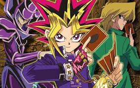

- 역사
- 규칙
- 기타
유희왕이란?

일단 앞서 설명하자면 이 듀얼몬스터즈
의 전신이라고 할 수 있는 '매직&위저드'라는
게임은 유희왕 초기에 스쳐지나갔던 수많은 게임들처럼 일회용 게임이었다.
듀얼몬스터즈라는 게임은 만화 설정상 페가수스 J. 크로포드가 만든 미국의 대인기 게임으로서
원 제목이 매직&위저드 라는 것에서도 알 수 있듯이 알 사람은 아는
트레이드 카드게임인 매직 더 개더링이 모델이다...
참고로 듀얼 몬스터즈는 원래 만화에 처음 등장했던 1997년에는 매직&위저드라는 이름이었으나
이듬해 1998년 반다이에서 이 카드 게임을 TCG화 시킬 당시 듀얼 몬스터즈라는 이름을 썼었는데
이를 1999년 2월 코나미에서 이를 OCG화 시켰을 때부터 듀얼 몬스터즈라는 이름을 확정하였고
그 결과 2000년 애니메이션에서도 이 명칭을 그대로 따라가서 듀얼 몬스터즈라는 이름으로 통일된 것이다.